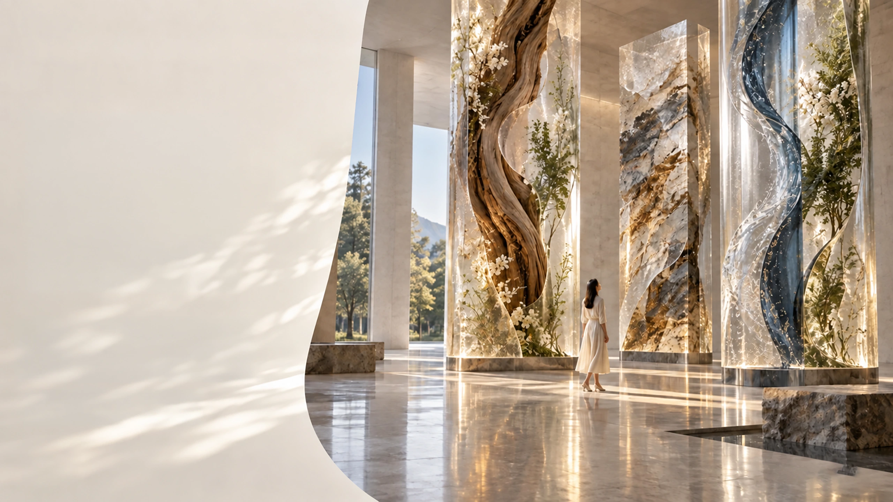
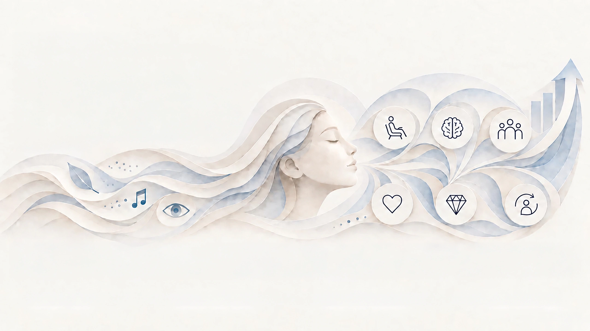
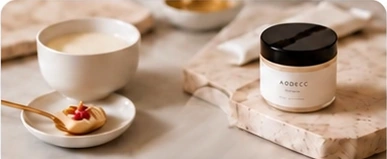
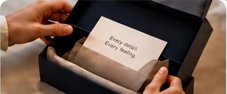

MORE COMFORT
Thoughtful sensory design reduces friction and creates ease.
People may forget what a brand says.
But they remember how it made them feel.
Feelings shape decisions.
Emotions create connections.
Memories drive loyalty.
Your brand is already being sensed.
The real question is whether that experience is intentional.
People experience brands through space, visuals, sound, touch, taste, and scent—often before they process a message.

Scent can shape how a place feels before anything is seen or said.
Before people fully process words or visuals, scent can already set the tone—welcoming, calming, premium, fresh, or energizing.
The atmosphere shifts. Emotion responds.
Comfort grows. The moment stays in memory.
MULTISENSORY EXPERIENCE DESIGN
The strongest experiences happen when every sensory cue tells the same story.
Scent may begin the journey, but its impact grows when it works together with sight, sound, touch, taste and the surrounding environment. Multisensory design turns isolated cues into one coherent brand experience.

WHY THIS MATTERS TO YOUR BUSINESS
Sensory cues shape how people feel —
and that shapes what brands gain.
When sensory touchpoints work together, brands create more than atmosphere.
They create comfort, memory, engagement, preference, premium perception,
and long-term loyalty.
Thoughtful sensory design reduces friction and creates ease.
Scent, sound, and sight create cues that people remember.
Multi-sensory environments invite people to stay, explore, and connect.
Positive experiences build emotional connection and brand choice.
Consistent sensory quality signals care, craft, and differentiation.
Meaningful experiences turn customers into advocates and long-term value.
BUILDING SENSORY STRATEGY
We connect what people sense
with what the business needs to achieve.
A&S translates brand ambition and human insight into a coherent sensory system that can be designed, tested and implemented.
What must the
experience achieve?
What should the brand
communicate?
What should people feel,
remember and choose?
Clear in direction. Coherent in experience. Valuable in practice.
MOREFrom scent and product experience to space and touchpoints,
we help brands turn sensory thinking into practical action.
Build atmosphere, emotion and memory through scent.

Shape how products are perceived, felt and remembered.
Design spaces that feel intentional, immersive and coherent.

Connect sensory cues across every point of contact.